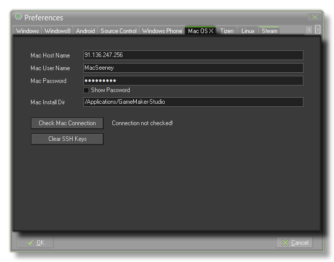

Mac OS Preferences
The section details the Mac OS preferences tab.

For GameMaker:Studio to work with an Apple Mac, a few things need to be set up first in the preferences. Once you open this tab you will see the following sections that need to be filled in for
GameMaker:Studio to be able to communicate properly with your Mac and for you to test your games :
- Mac Host Name - This is the name (or IP address) of the Mac on the local network that you are going to use.
- Mac User Name - This is the name of the user account that will be active for testing your games.
- Mac Password - The password for the user account specified in the section above.
- Mac Install Directory - This is where the Application Oven/Xcode build output files go - the *.app.zip backup copy, plus any intermediate build files, splash screen images, configuration files, etc...
Below these inputs is a button labelled Check Mac Connection which you can use to test the information you have supplied to make sure that the connection to your Mac is correct and working. Please note
that you must have enabled Remote Login on the target mac. This can be done by going to Preferences -> Sharing and enable Remote Login for the user you want to be
able to login.
Finally there is a button marked Clear SSH Keys which is used to clear the Secure Shell Hash. This is provided as an option for those users that have changed Mac, or re-installed the OS on their
current one, and need to re-configure their secure keys.